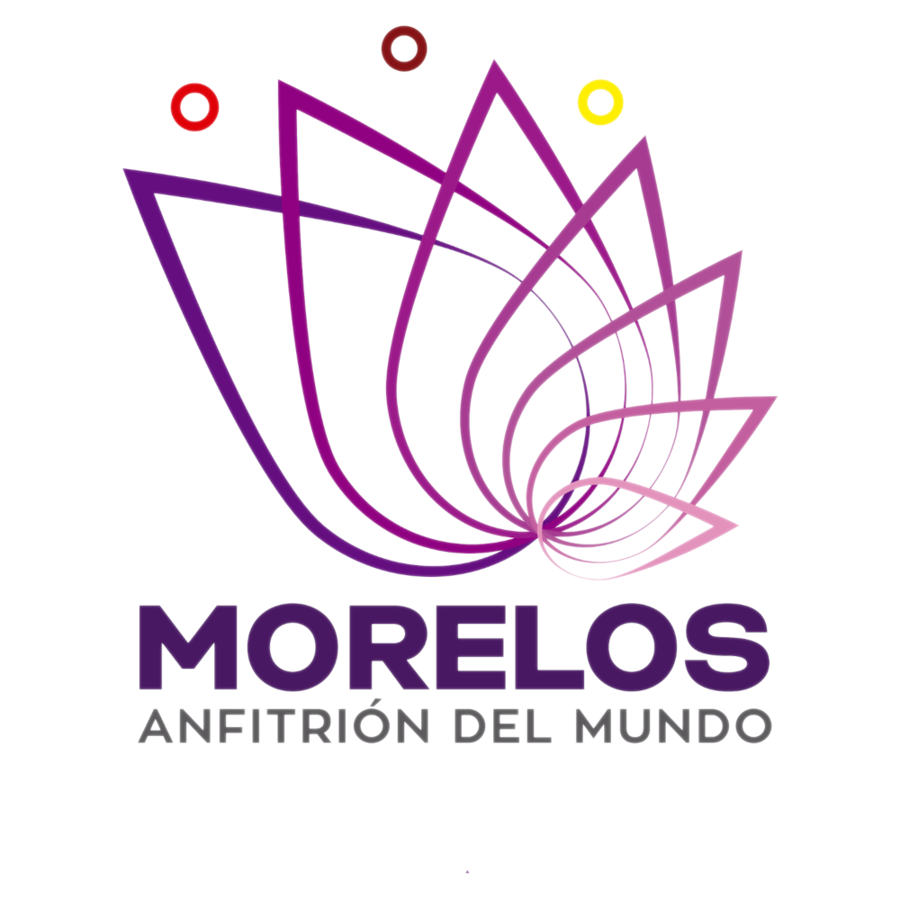

<mat-sidenav-container style="background-image: url('../../../assets/banner-cuernavaca_1.jpg'); background-position: center; background-size: cover;" fullscreen>
  <shared-sidenav-conceptos
    [reciveActionSideNav]="sendActionSidenav"
    [eraseLocalStor]="sendActEraseLocalStor"

    [reciveValCard]="sendValCardSidenav"

    (nameConcept)="reciveNameConcept($event)"></shared-sidenav-conceptos>

  <shared-toolbar
    (openOrCloseSidenav)="actionOnSidenav"
    (closeLocalStor)="redirectHome($event)"
    [nameConceptToolbar]="receiveNameConcept"
    [receiveNameDep]="senNameDep"
    [viewResolution]="sizeDisplay"
    ></shared-toolbar>


  <div class=" p-2">
      <!--div *ngIf="flag" class="flex flex-wrap align-items-center justify-content-center">
          <div class="zoomin animation-duration-1000 animation-iteration-1 flex align-items-center justify-content-center
      font-bold bg-green-500 text-white border-round m-2 px-5 py-3">

            
          </div>
      </div-->
    <router-outlet></router-outlet> <!--*ngIf="!flag" class=""></router-outlet-->
  </div>

</mat-sidenav-container>
